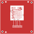
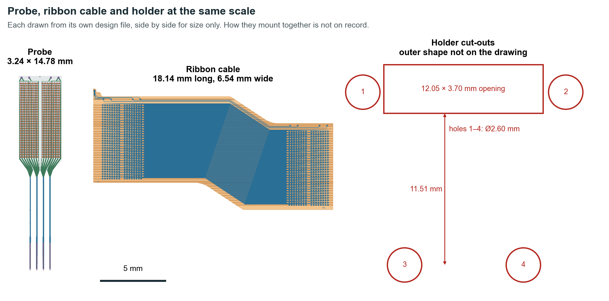
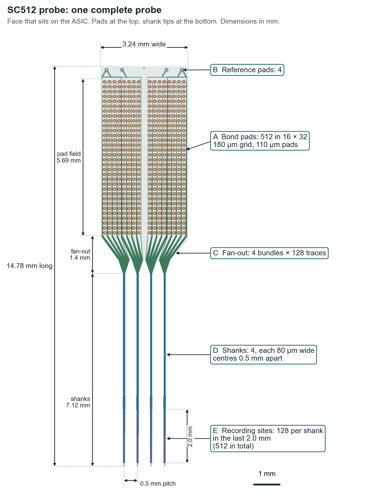
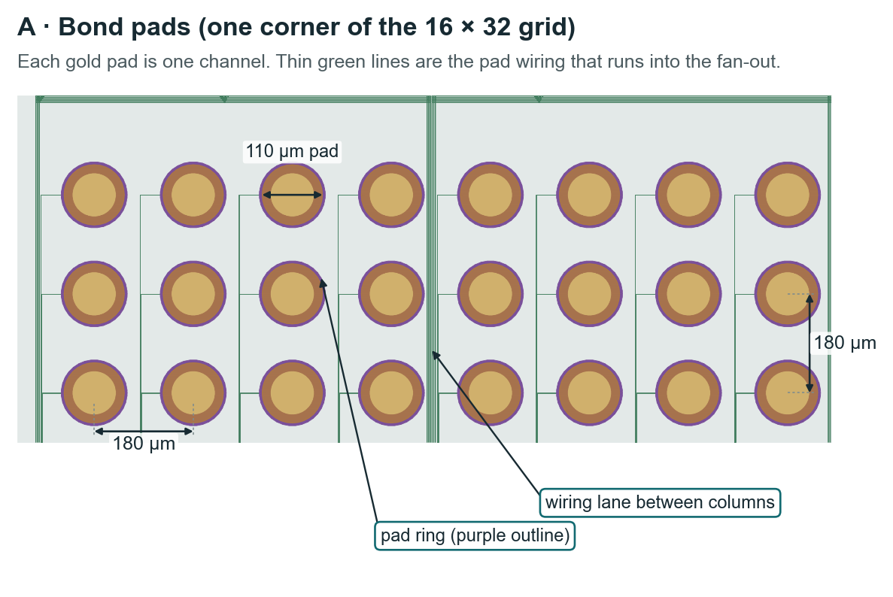
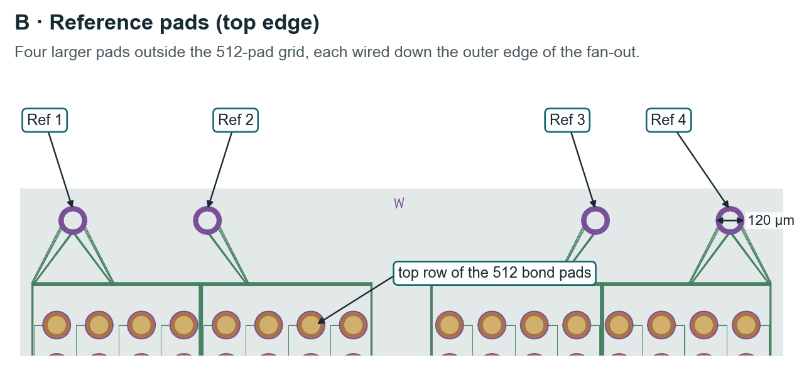
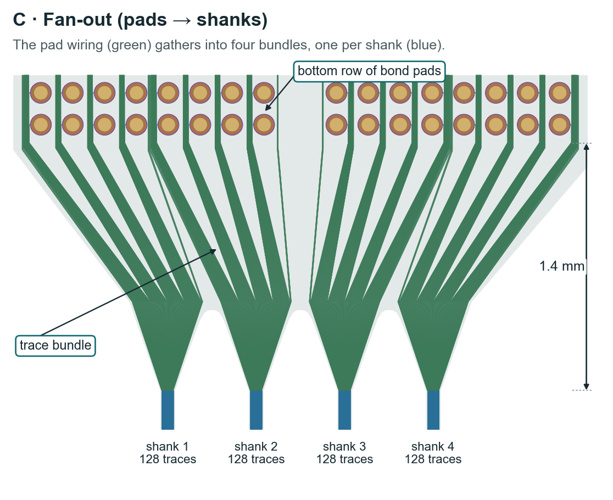
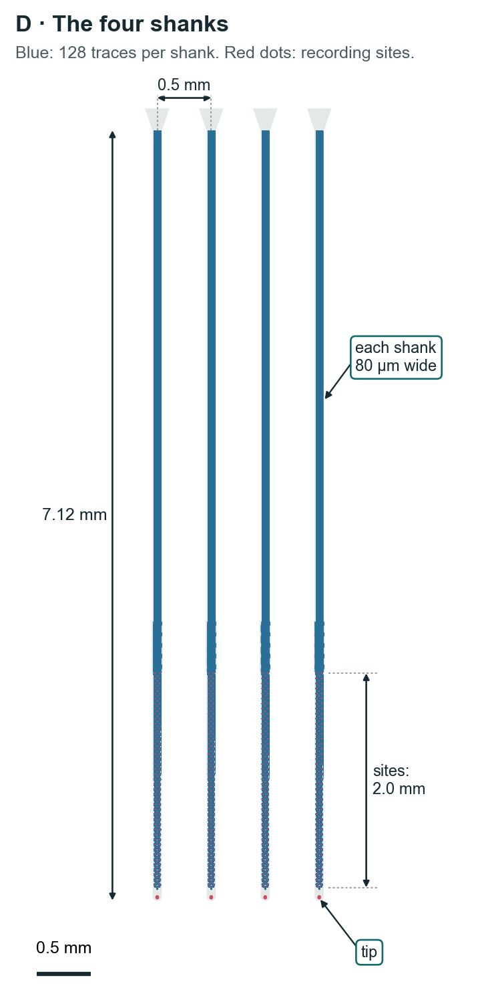

HDMI Extension Board

Frontend FPGA Board


FPGA-LDO PCB · Option A

ASIC boards · top and bottom

Probe, ribbon and holder


All parts at the same scale
- Probe: 3.24 × 14.78 mm.
- Ribbon cable: 18.14 mm long, 6.54 mm wide.
- Holder: 12.05 × 3.70 mm opening and four Ø2.60 mm holes.
- Shown side by side to compare sizes only. No record says how they mount together.


One complete probe
- 3.24 mm wide, 14.78 mm long.
- From top to bottom: reference pads (B), bond pad field (A, 5.69 mm), fan-out (C, 1.4 mm), four shanks (D, 7.12 mm) with recording sites in the last 2.0 mm (E).
- This is the face that sits on the ASIC. There is one probe on every ASIC: 2 per ASIC board, 8 per head stack.


ABond pads
- 512 pads, one per channel.
- 16 columns × 32 rows, in two halves of 8 columns.
- 180 µm centre to centre, across and down.
- Each pad is 110 µm across, inside a 120 µm ring.
- The whole field is 3.04 × 5.69 mm.
- Thin green lines carry each pad's signal down a lane between the columns into the fan-out.


BReference pads
- 4 pads, about 120 µm, along the top edge outside the 512-pad grid.
- Each is wired down the outer edge of the fan-out.


CFan-out
- 1.4 mm from the bottom pad row to the start of the shanks.
- The pad wiring gathers into 4 bundles of 128 traces, one bundle per shank.
- Bundles enter the shanks 0.5 mm apart.


DShanks
- 4 shanks, each 80 µm wide.
- 7.12 mm long, from the end of the fan-out to the tip.
- 0.5 mm centre to centre.
- Each shank carries 128 traces.
- The recording sites fill the last 2.0 mm of each shank.

ERecording sites
- 128 sites per shank, 512 in total.
- Three columns 21.4 µm apart.
- A row every 23.3 µm, alternating 2 outer sites and 1 centre site.
- Each opening is drawn 9 µm. The channel map models each contact as a 20 µm circle.
- One larger opening, 30 × 34 µm, sits at the very tip.
- Site positions are in the contact-position download.

FOne complete ribbon
- 18.14 mm long and 6.54 mm wide at both ends.
- The body steps 2.06 mm sideways in the middle.
- 512 traces run side by side between the two ends.
- Two thin reference lines run along the top edge to a tab pad in the corner.
- From the confirmed ribbon design, RibbonEChipv5_SC_probe_reentered_litho1.
- 24 ribbons per wafer. The newest revision uses the left-hand ribbon in all 24 places, scaled ×1.0057 for the mask.

F1Ribbon end 1 (left)
- 512 pads in 16 columns × 32 rows at 180 µm, the same grid as the probe's bond pads.
- The columns are in two groups of 8.
- 4 reference pads (Ref 1 to 4) sit above the grid.
- A tab pad in the corner is where the reference lines of both ends meet.
- Thin cuts in the body separate the pad rows.

F2Ribbon end 2 (right)
- The same 512-pad grid: 16 × 32 at 180 µm in two groups of 8 columns.
- 4 reference pads (Ref 1 to 4) sit above the grid.

GWire-bond holder
- One 12.05 × 3.70 mm opening and four Ø2.60 mm holes.
- Holes 1 and 2 are centred 1.60 mm and 1.70 mm beyond the ends of the opening.
- Holes 3 and 4 are centred 11.51 mm below the opening's lower edge, 1.55 mm and 1.50 mm in from its ends.
- All dimensions in mm, from SC_chip_WB_holder_manufacture.pdf (5 Mar 2026).
- The outer shape, material and thickness are not on this drawing.

On the ASIC board
- ASIC top board (V11 outline; V14 is 0.4 mm wider): one probe (red) face-down on each ASIC.
- The shanks leave the board's bottom edge, about 7.5 mm past it.
- Per head stack: 4 ASIC boards × 2 ASICs = 8 probes, 32 shanks, 4,096 channels.
- The 3D system overview draws a probe on every ASIC.
← System overview
Board comments
Open items per board, design review V6, checked 19 November 2026 against HDMI Extension Board V39, Frontend 14 layers V13, FPGA-LDO A layout V24, ASIC boards V15 and pin map V8. Items that need a built board are notes. Not fabrication approval.
Items (design review V6, 19 Nov)
Minor items
Minor items
Minor items
Minor items